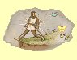

Magie mysli
Meditace
Mana: 1, Cena: 100
Doèasnì zvý¹í hrdinùv Intelekt a Osobnost o 10 bodù plus 2 body za ka¾dý bod Magie Mysli.
| Normální | Zvý¹í Inetelekt a Osobnost o 10 bodù plus 2 body za bod dovednosti | |
| Expert | Zvý¹í Inetelekt a Osobnost o 10 bodù plus 3 body za bod dovednosti | |
| Mistr | Pùsobí na celou skupinu |
Sejmi strach
Mana: 2, Cena: 200
Sejme z hrdiny prokletí strachem, pokud je zakouzleno vèas. Èím vy¹¹í je dovednost a úroveò Magie Mysli, tím déle trvá, ne¾ vystra¹ený dosáhne "bodu bez návratu", kdy u¾ kouzlo nepomù¾e. Potom u¾ zbývá, pokud neumíte Bo¾ský zásah, jen jediná mo¾nost zvrácení tohoto stavu, náv¹tìva chrámu.
| Normální | Funguje pokud nebyl hrdina vystra¹ený déle ne¾ 3 minuty za bod dovednosti | |
| Expert | Funguje pokud nebyl hrdina vystra¹ený déle ne¾ 1 hodinu za bod dovednosti | |
| Mistr | Funguje pokud nebyl hrdina vystra¹ený déle ne¾ 1 den za bod dovednosti |
Mentální úder
Mana: 3, Cena: 300
Udeøí jednu obì» proudem mentální energie a po¹kodí její nervový systém. My¹lenkový úder zpùsobí 5 bodù zranìní plus 1-2 body za bod dovednosti v Magii Mysli.
| Normální | Støední zotavení | |
| Expert | Rychlej¹í zotavení | |
| Mistr | Nejrychlej¹í zotavení |
Preciznost
Mana: 4, Cena: 400
Doèasnì zvý¹í Pøesnost o 10 bodù plus 2 body za bod dovednosti v Magii Mysli.
| Normální | Zvý¹í pøesnost o 10 bodù plus 2 body za bod dovednosti | |
| Expert | Zvý¹í pøesnost o 10 bodù plus 3 body za bod dovednosti | |
| Mistr | Pùsobí na celou skupinu |
Odstraò ochromení
Mana: 5, Cena: 500
Odstraní ochromení, pokud je zakouzleno vèas. Èím vy¹¹í je dovednost a úroveò Magie Mysli, tím déle trvá, ne¾ ochromený dosáhne "bodu bez návratu", kdy u¾ kouzlo nepomù¾e. Potom u¾ zbývá, pokud neumíte Bo¾ský zásah, jen jediná mo¾nost zvrácení tohoto stavu, náv¹tìva chrámu.
| Normální | Funguje pokud nebyl hrdina ochromený déle ne¾ 3 minuty za bod dovednosti | |
| Expert | Funguje pokud nebyl hrdina ochromený déle ne¾ 1 hodinu za bod dovednosti | |
| Mistr | Funguje pokud nebyl hrdina ochromený déle ne¾ 1 den za bod dovednosti |
©arm
Mana: 8, Cena: 750
Uklidní zasa¾enou obì» a odstraní nepøátelské my¹lenky vùèi va¹im hrdinùm. Pokud jí ale zpùsobíte jakékoliv zranìní, stane se okam¾itì znovu nepøátelskou.
| Normální | Trvání 3 minuty za bod dovednosti | |
| Expert | Trvání 6 minut za bod dovednosti | |
| Mistr | Trvání 12 minut za bod dovednosti |
Hromadný strach
Mana: 10, Cena: 1000
V¹echny pøí¹ery v kouzelníkovì dohledu jsou vystra¹eny a dají se na útìk. Pokud je pøí¹era zranìna, úèinek kouzla okam¾itì mizí. Hromadný strach nepùsobí na nemrtvé. trvání kouzla 3 minuty za bod dovednosti v Magii Mysli.
| Normální | Støední zotavení | |
| Expert | Rychlej¹í zotavení | |
| Mistr | Nejrychlej¹í zotavení |
Oslabení mysli
Mana: 15, Cena: 1500
Toto prokletí znemo¾òuje obìti sesílat kouzla, dokud Oblbnutí nevyprchá. trvání kouzla je 5 minut za bod dovednosti v Magii Mysli.
|  | Normální | Støední zotavení |
| Expert | Rychlej¹í zotavení | |
| Mistr | Nejrychle¹í zotavení |
Odstraò ¹ílenství
Mana: 20, Cena: 2000
Odstraní ¹ílenství, pokud je zakouzleno vèas. Èím vy¹¹í je dovednost a úroveò Magie Mysli, tím déle trvá, ne¾ ¹ílený dosáhne "bodu bez návratu", kdy u¾ kouzlo nepomù¾e. Potom u¾ zbývá, pokud neumíte Bo¾ský zásah, jen jediná mo¾nost zvrácení tohoto stavu, náv¹tìva chrámu.
| Normální | Funguje pokud nebyl hrdina ¹ílený déle ne¾ 3 minuty za bod dovednosti | |
| Expert | Funguje pokud nebyl hrdina ¹ílený déle ne¾ 1 hodinu za bod dovednosti | |
| Mistr | Funguje pokud nebyl hrdina ¹ílený déle ne¾ 1 den za bod dovednosti |
Psychický ¹ok
Mana: 25, Cena: 3000
Podobný Mentálnímu úderu, vybraná obì» je zasa¾ena proudem du¹evní energie, ov¹em s mnohem vìt¹ím úèinkem. Psychický ¹ok zpùsobí 12 bodù zranìní plus 1-12 bodù za bod dovednosti v Magii Mysli.
| Normální | Pomalé zotavení | |
| Expert | Rychlej¹í zotavení | |
| Mistr | Nejrychlej¹í zotavení |
Telekineze
Mana: 30, Cena: 5000
Telekineze dovoluje manipulovat s objekty na dálku silou rovnající se dovednosti hrdiny v Magii Mysli. Tímto kouzlem lze pøepínat spínaèe, zvedat vìci, otevírat dveøe a to v¹echno v bezpeèné vzdálenosti od v¹ech tìch ohavných pastí.
| Normální | Síla úèinku je 1 bod za bod dovednosti | |
| Expert | Síla úèinku je 2 body za bod dovednosti | |
| Mistr | Síla úèinku je 3 body za bod dovednosti |